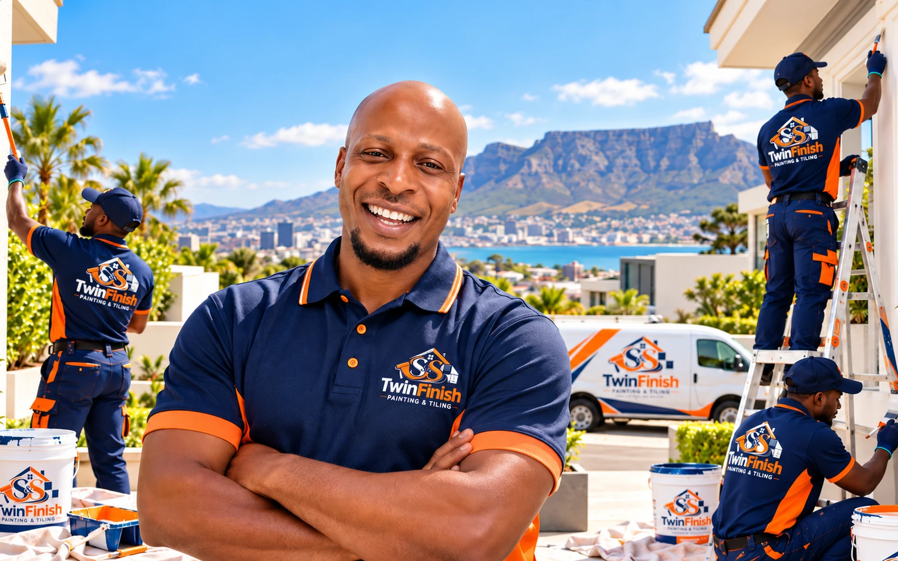
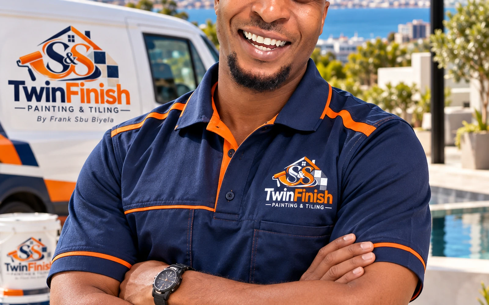
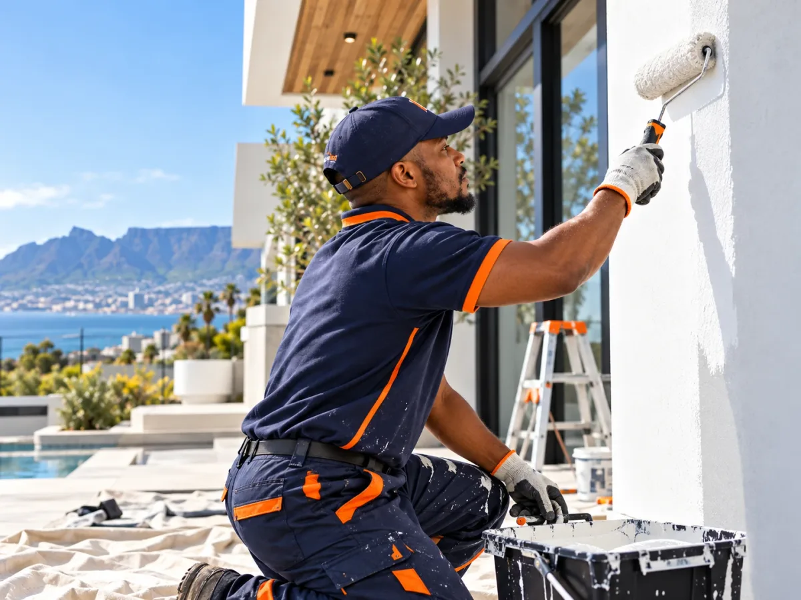
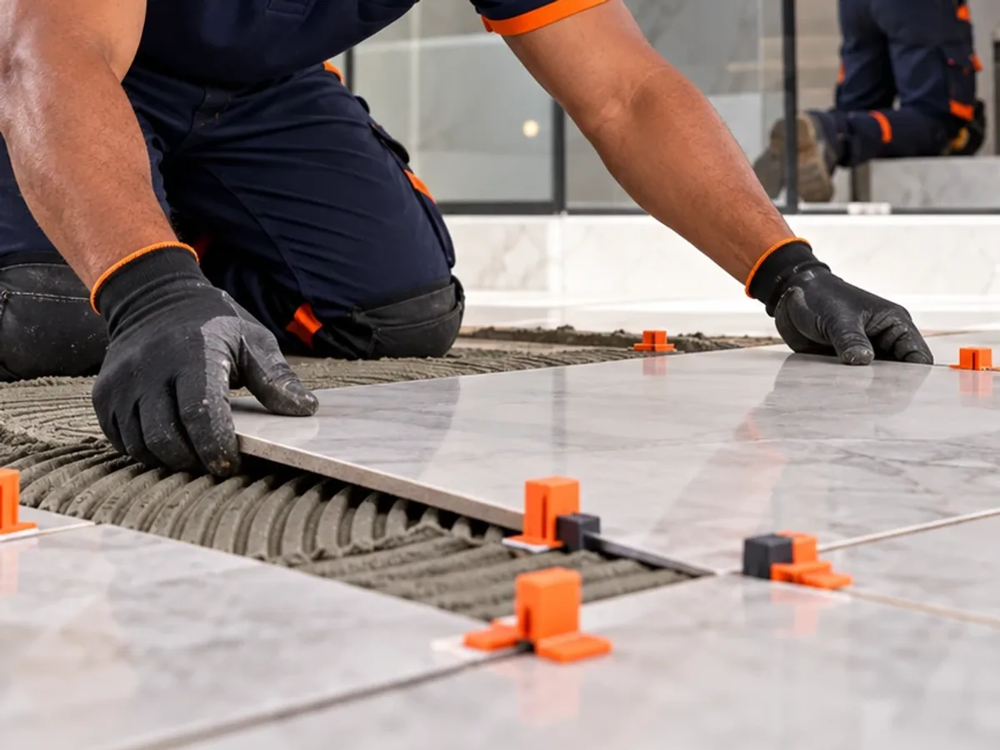
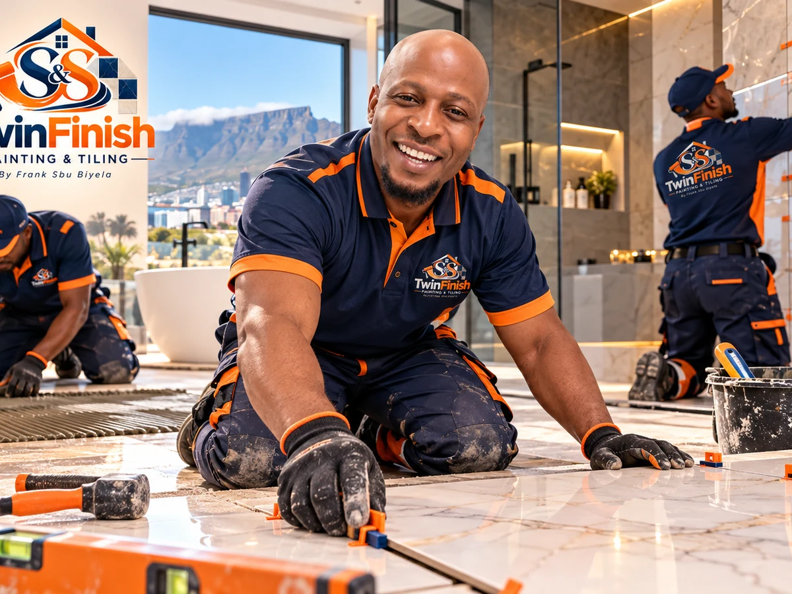
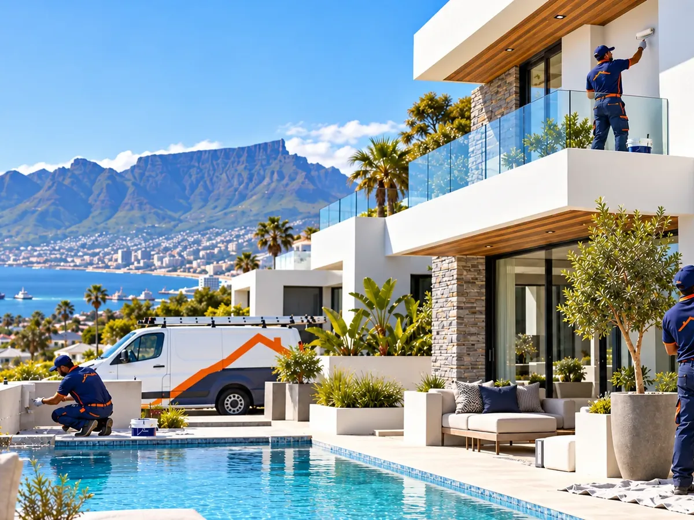

Beautiful spaces.
Done properly.
TwinFinish delivers careful painting, precise tiling and clean workmanship for homes, apartments, offices and commercial spaces across Cape Town.
From first coat to final grout line.
One practical team for the surfaces that define a room: walls, ceilings, floors, bathrooms, kitchens and exterior finishes.


A personal business with professional standards.
TwinFinish is led by Frank Sbu Biyela and built around the kind of reputation that depends on how every space is left when the job is finished.
Good finishing starts before the paint or tile is installed.
Work areas are protected, managed and cleaned as the project progresses.
Whether residential or commercial, the detail level stays consistent.

Simple process. Clean execution.
Discuss
Tell us what you need and where the work is located.
Assess
Review surfaces, measurements, access and finishing requirements.
Prepare & work
Protect the space, prepare correctly, then paint or tile with precision.
Finish & hand over
Complete details, clean the work area and review the result with you.
Work that looks good up close.
These concept images demonstrate the intended photography style for the website. Replace them with verified TwinFinish project photos as the portfolio grows.



